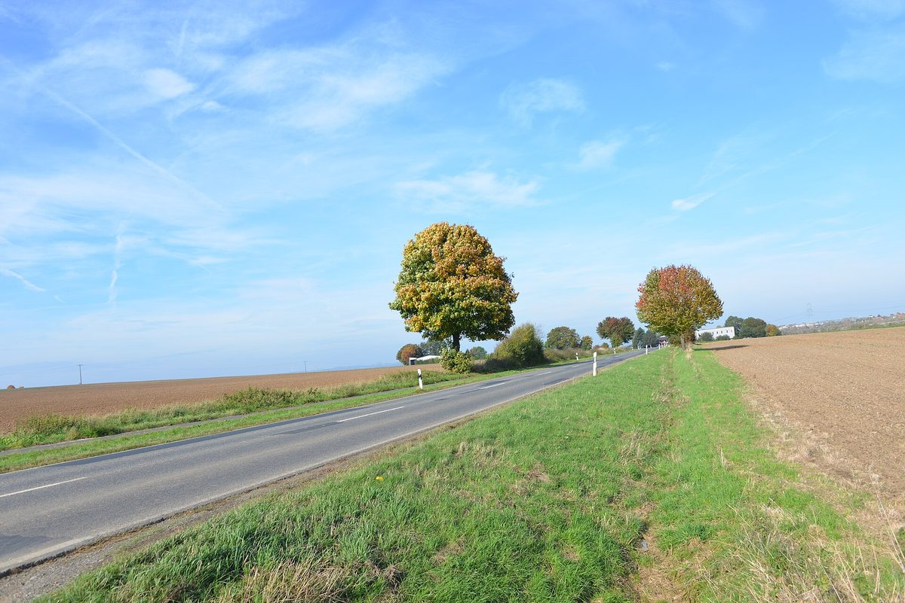

독일 정부 EEG 개정안 풍력 임대료 3.5% 상한에 기센 군 지자체들 수입 끊길까 우려…땅 임대 대신 운영회사 지분·주민 협동조합 참여로 맞선다

라베나우·랑괴른스·알렌도르프 시·읍장, 임대 수입 급감이나 사업 중단 경고…랑괴른스는 고속도로 옆 태양광단지 운영회사 50% 소유, 알렌도르프는 시가 지분 50% 갖고 전기를 시 건물에 쓰는 안 검토
독일 연방정부가 마련한 재생에너지법(EEG) 개정 초안이 풍력단지에 필요한 땅의 임대료를 연간 기대 입지 수익의 3.5%로 묶으려 하자, 헤센주 기센 군의 시·읍들이 지자체 땅을 빌려주고 받던 수입이 크게 줄거나 끊길 수 있다며 우려하고 있다. 개정 초안에는 소형 태양광의 발전차액(고정가격 매입) 폐지와 설치 용량의 최대 50%만 계통에 보낼 수 있게 하는 내용도 들어 있다. 비외른 치머 라베나우 읍장은 아직 계약하지 않은 사업에서는 개발사가 임대료를 다시 깎자고 나설 것이고, 사업성이 없어 아예 멈추는 사업도 나올 수 있다고 내다봤다. 독일풍력협회(BWE)는 개정안에 주민 참여 장치가 여전히 충분하지 않다고 비판했다. 마리우스 로이슈 랑괴른스 읍장은 땅만 빌려줘서는 부족하고 운영회사 지분을 가져야 한다며, 이웃 휘텐베르크·쇠펜그룬트와 함께 추진할 수 있는 풍력단지에 지자체가 운영회사로 참여하고 주민도 자체 협동조합으로 참여시키길 원한다고 밝혔다. 랑괴른스는 A45 고속도로 옆 태양광단지를 지역 공기업 OVAG와 50%씩 소유할 계획이고, 알렌도르프(룸다)도 클림바흐 인근 태양광단지 지분 50%를 갖고 생산 전기를 시 소유 건물에 쓰는 방안을 계획 중이다.
시민에너지 관점
로이슈 읍장의 말처럼 이익이 지역에 남아야 주민이 발전소의 부담을 받아들인다는 것이 기센 군 지자체들이 임대료 상한 앞에서 찾은 결론이다. 지자체가 지분을 가지면 위험도 함께 진다는 우려가 있을 수 있지만, 땅만 빌려주는 쪽은 법이 바뀌는 순간 협상력을 잃고, 운영회사의 주인은 전기와 이익의 쓰임을 스스로 정한다. 지역이 받는 몫이 임대료라는 작은 대가에 머물지 않고 지분이라는 자산이 될 때 재생에너지는 주민의 사업이 된다. 우리도 공공부지를 사업자에게 빌려주는 데서 멈추지 말고, 지자체와 주민이 운영 주체로 참여하는 길부터 제도로 열어야 한다.
출처: Gießener Allgemeine 2026-10-24 Patrick Dehnhardt 원문 보기
ドイツ政府のEEG改正案、風力用地の賃料に3.5%上限…ギーセン郡の自治体が収入途絶を懸念、土地貸しから運営会社への出資・住民協同組合参加へ
ラーベナウ・ランゲンス・アーレンドルフの首長が賃料収入の激減や事業中止を警告…ランゲンスは高速道路沿いの太陽光発電所の運営会社を50%所有、アーレンドルフは市が50%出資し電気を市の建物で使う案を検討
ドイツ連邦政府がまとめた再生可能エネルギー法（EEG）の改正草案が、風力発電所に必要な土地の賃料を年間の見込み立地収益の3.5%に抑えようとしていることを受け、ヘッセン州ギーセン郡の市町村は、自治体の土地を貸して得てきた収入が大きく減るか途絶えかねないと懸念している。改正草案には、小型太陽光の固定価格買取の廃止や、設置容量の最大50%しか系統に送れないようにする内容も含まれている。ビョルン・ツィマー・ラーベナウ町長は、まだ契約していない事業では開発事業者が賃料の再交渉を求め、採算が合わずに止まる事業も出かねないと見通した。ドイツ風力エネルギー協会（BWE）は、改正案に住民参加の仕組みが依然として十分に盛り込まれていないと批判している。マリウス・ロイシュ・ランゲンス町長は、土地を貸すだけでは足りず運営会社に出資すべきだとし、隣接するヒュッテンベルク、シェッフェングルントと共に進め得る風力発電所に自治体が運営会社として加わり、住民も独自の協同組合で参加させたいと語った。ランゲンスはA45高速道路沿いの太陽光発電所を地域の公営企業OVAGと50%ずつ所有する計画で、アーレンドルフ（ルムダ）もクリムバッハ近くの太陽光発電所に50%出資し、発電した電気を市所有の建物で使う案を計画している。
市民エネルギーの視点
ロイシュ町長の言うように、利益が地域に残ってこそ住民は発電所の負担を受け入れる――それが賃料上限を前にギーセン郡の自治体がたどり着いた結論だ。自治体が出資すればリスクも負うとの懸念もあろうが、土地を貸すだけの側は法律が変わった瞬間に交渉力を失い、運営会社の持ち主は電気と利益の使い道を自ら決められる。地域の取り分が賃料というささやかな対価にとどまらず、出資という資産になってこそ、再生可能エネルギーは住民の事業になる。韓国でも公有地を事業者に貸すだけで終わらせず、自治体と住民が運営主体として参加する道をまず制度として開くべきだ。
出典: ギーセナー・アルゲマイネ（Gießener Allgemeine） 2026-10-24 パトリック・デーンハルト（Patrick Dehnhardt） 原文を読む
德国政府EEG修订草案拟将风电用地租金上限定为3.5%…吉森县地方政府担心收入中断，转向入股运营公司并吸纳居民合作社
拉贝瑙、朗格恩斯、阿伦多夫的市镇长警告租金收入锐减甚至项目停摆…朗格恩斯计划持有高速公路旁光伏电站运营公司50%股份，阿伦多夫考虑由市持股50%并将电力用于市属建筑
德国联邦政府拟定的《可再生能源法》（EEG）修订草案打算把风电场所需全部土地的租金限制在年预期场址收益的3.5%，黑森州吉森县的多个市镇因此担心，出租公有土地换来的收入将大幅减少甚至中断。修订草案还包括取消小型光伏的固定上网电价，并规定最多只能把装机容量的50%送入电网。拉贝瑙镇长Björn Zimmer预计，尚未签约的项目中开发商会要求重新压低租金，也可能有项目因不再具备经济性而停摆。德国风能协会（BWE）批评修订案仍未充分纳入居民参与机制。朗格恩斯镇长Marius Reusch表示，仅出租土地已经不够，必须持有运营公司股份；对于可能与邻近的许滕贝格、舍芬格伦德共同推进的风电场，他希望各市镇作为运营公司参与，并让居民通过自己的合作社参与进来。朗格恩斯计划与地方公营企业OVAG各持A45高速公路旁光伏电站运营公司50%的股份，阿伦多夫（伦姆达）也计划在克林巴赫附近的光伏电站持股50%，将所发电力用于市属建筑。
市民能源视角
正如Reusch镇长所说，利益留在本地，居民才更愿意承受电站带来的负担——这是吉森县各市镇在租金上限面前得出的结论。有人会担心地方政府入股也要承担风险，但只出租土地的一方在法律改变的一刻就失去议价能力，而运营公司的主人可以自己决定电力和收益的用途。当地方得到的不只是租金这点小报酬，而是股权这一资产时，可再生能源才会成为居民自己的事业。韩国也不应止步于把公有土地租给开发商，而应首先在制度上为地方政府和居民作为运营主体参与开辟道路。
来源: 《吉森汇报》（Gießener Allgemeine） 2026-10-24 Patrick Dehnhardt 查看原文
German government's draft EEG reform would cap wind farm land leases at 3.5%, leaving Giessen district municipalities fearing lost income as they turn to stakes in operating companies and resident cooperatives
Mayors of Rabenau, Langgöns and Allendorf warn of sharply lower lease income or stalled projects; Langgöns plans to own 50% of the company running a solar park by the A45, and Allendorf plans a 50% stake with the power used in town buildings
Towns and municipalities in the Giessen district of Hesse fear that income from leasing public land for renewable projects could shrink sharply or dry up, after the German federal government's draft amendment to the Renewable Energy Sources Act (EEG) proposed capping lease payments for all land needed by a wind farm at 3.5% of the site's expected annual yield. The draft would also abolish feed-in tariffs for small solar systems and allow them to feed at most 50% of installed capacity into the grid. Björn Zimmer, mayor of Rabenau, expects developers to renegotiate leases on projects not yet under contract, and some projects may halt altogether because they no longer pay. The German Wind Energy Association (BWE) has criticised the draft for still not anchoring enough opportunities for local residents to take part. Marius Reusch, mayor of Langgöns, said leasing land is no longer enough and municipalities must hold stakes in operating companies; for a possible wind farm with neighbouring Hüttenberg and Schöffengrund, he wants the municipalities in the operating company and residents involved through their own cooperative. Langgöns plans to share ownership of a solar park by the A45 motorway 50-50 with the regional utility OVAG, and Allendorf (Lumda) plans a 50% stake in a solar park near Climbach, using the power for town-owned buildings.
Citizen Energy View
As Mayor Reusch put it, residents bear the burden of power plants more easily when the value stays local, and that is the conclusion Giessen's municipalities have reached in the face of the lease cap. Some will worry that municipal stakes also mean municipal risk, but a mere landlord loses its bargaining power the moment the law changes, while an owner of the operating company decides for itself how the power and profits are used. Renewable energy becomes the community's own business when the local share is not a small rent but an equity asset. Korea, too, should not stop at leasing public land to developers, and should first open a legal path for local governments and residents to take part as operators.
Source: Gießener Allgemeine 2026-10-24 Patrick Dehnhardt Read the original